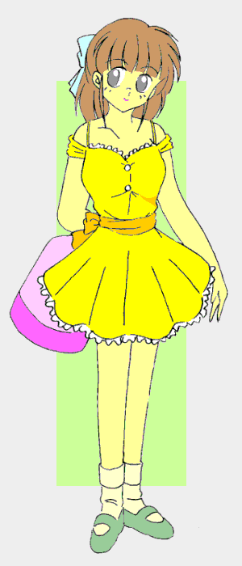

夏休み直前の試験休みのころ。ある日の午前中。
僕……ううん、あたし、二村つかさは電車に揺られていた。
一人称からわかると思うけど、今のあたしは女の子。髪はまだそれほど長くないけど、この体質を意識してから三ヶ月で、なんだか伸びるのが早くなった気がする。
元から素直で柔らかい……つまり女の子のような髪だったけど、女の子そのものになったら余計さらさらになったみたい。
今のあたしの格好は、大きく肩の出たサマードレス。

着せ替え少年
番外編 〜Summer Days, and Yet〜
作：城弾
「何だお前？」「ここは『痴漢専用車両』だ。……ここへ乗った以上、“合意”とみなされても文句は言えないんだぞっ」
ち……痴漢専用車両？ 女性専用じゃなくて？
「やかましいっ！ またネットを悪用して変な企画立てやがってっ」
小柄な女の子は、負けじとそう言い返す。
正義感が強いっていうより、本人がいやな過去をもっているのかも……というほど、痴漢に対して容赦なかった。
「くくっ……いいのか？ ここは俺たちにとって、いわば“ホームグラウンド”。お前らは相手チームの応援団の中にいるようなものなんだぞ……」
「そうそう、ここなら例えレイプされたとしても、誰も証人にはなってくれないんだからな」
なんて話ッ！？ ……だけど、その女の子は強気な態度を崩さない。
「……やれるものならやって見やがれっ！」
そう言うなりいきなり踏み込んで、痴漢たちの顔から胴体にかけて無数の蹴りを見舞った。
「スタークラッシュ」
「「「ぶっぎゃああああああっっっっ！！！！」」」
す……すごいっ。キックをあれだけ連発するのはもちろん、このゆれる電車内でのバランス感覚。
でも、いいの？ スカートでその技。……あ、本人承知ならいいか。
哀れ痴漢たちは鼻血を噴いてＫＯされた。ちょうどそのとき、駅に着く。
「ヤベッ、いくら痴漢でもやりすぎたか……暴行されたって言っても先に痴漢に言及されるから、まず訴えられないだろうけど……さすがにまずい。逃げるぞっ！」
そういうと女の子は、あたしの手を強引に引っ張って電車を降りた。
その危険性は覚悟しているはずの女の子でも、嫌悪感を感じる痴漢。ましてや本当は男のあたしが、見知らぬ男にいいように体を撫で回されたのだ。
……猛烈な悔しさと屈辱、おぞましさを思い出し、改札を抜けた途端、泣きたくなってきた。
「うっ……ううう――」
こらえようとしたけど、涙がぽろぽろこぼれてくる。
それを見て、あたしの手を引いてた女の子がビックリする。ゴメンね。でも……涙が止まらないの。
「……わっ、しっかりしろよっ。……うーん困ったな。いいや、どこかへ行くはずだったのを勝手に下ろしたついでだ。……来なよ」
ようやく涙が止まったころ、あたしが連れてこられたのは喫茶店だった。
「……ただいま」
「あら、みずきちゃん。……お帰りなさい」
どうやらここは、この女の子のお家らしい。
するとこの女の人はお姉さん……歳が離れていそうだけど、お母さんだとしたら若すぎる。凄い美人。
「お友達？」
あたしのことだ。
「痴漢にあってたから助けた」
それを言われてあたしはあの悔しさが蘇えってきた。
「まぁ……」
憂い顔を見せる女の人。
あたしは空いていた席に座らされた。暫く下を向いていた。すると甘い香りの飲み物が。
「はい。夏でも暖かいココアはほっとするわよ」
顔を上げると、さっきの女の人が微笑んでいた。
「……あ、ありがとう……ございます――」
優しい女の人。……男だったらボーっとなっちゃうだろうけど、今は女のあたしは、むしろ「同性」としてあこがれを感じた。
……でも、やっぱり夏にホットココアは…………どこかずれてるわね。
「お待たせ」
そう言いながら、「みずき」と呼ばれた女の子が私服に着替えて降りてきた。
あれ？ シャワーでも浴びたのかな？ シャンプーのいい匂い。
レモンイエローのキャミソールにホットパンツ。
背中はご多分に漏れず水着の跡。……ううっ、もしこんな女の子ならではの水着跡が「僕」についたら、しばらく男に戻れそうにないかも。
「落ち着いたかい？」
可愛い声なのに男言葉。凄いギャップ。
改めてみると……身長は１５０の前半くらいかな？ 丸い顔。「美少女」っていっていい。
髪の毛は女の子としては短め。それでも襟足は束ねるほどの長さがある。
そして胸は「ど迫力」だった。
今すぐにでもグラビアアイドルにスカウトされそうなほどの、スタイルのよさ。
「そういやアンタ、名前は？ よかったら教えてくれる？」
「あ……はい、二村つかさです」
「オレは……」
「おれ？」
「ああ、いや……あたしは赤星みずき。よろしく」
華奢な手を差し出されて、あたしたちは握手を交わした。
聞けばこのみずきさんも、以前痴漢にあって、大変悔しい思いをしたらしい。
だからあたしのことも見過ごせなかったようだ。
ちなみに「痴漢専用車両」とは、インターネットで示し合わせて特定の時間の特定の車両に乗り込んで行う非合法行為らしい。
まわりがみんな痴漢だから、誰も助けてくれない。……というか、逆に痴漢されたい女の人も乗ってくるらしい。世も末だ（２１世紀になったばかりだけど）……
「あっあの……助けてくれて、ありがとう」
まずはお礼だ。
「気にすんなって。たまたまだし」
「たまたま？ そういえば夏休みなのに制服姿で……部活？」
「いや……その……なんでもいいだろ」
みずきさんは真っ赤になった。デートなら制服は変よね。
「それがね……この子、補習なのよ」
「お袋っ！！」
本当に男の子みたいね。「おふくろ」なんて。……えっ？ お母さん？ だとしたら若いっ。
そのお母さんは、優しく柔らかい声で続ける。
「この子頭はいいの。でもドジか多いのよ。テストの点数自体は満点に近いのに、名前を書き忘れて零点扱い……それで補習に出向いているの」
「い……いいだろ。……そ、そうだ。つかささんだっけ？」
「は、はい」
「どこかへ行くつもりだったんだろ。駅まで案内してやるよ」
言われてあたしは外出の目的を思い出した。
「はい。実はプールに行くつもりでした」
「え？ それじゃ友達と待ち合わせ？ ……やばっ。いくら非常事態でも、勝手に下ろしちゃって」
「いいえ違うんです。これも修行の一つで、一人で出向くつもりでした」
「『修行』って？」
まさか女の子になりきるための修行――だなんていえない。
「……まぁいいや。よし、それじゃみんなでいこうか」
あたしが止める間もなく、みずきさんは何処かへ電話をかけ始めた。
……あああっ、また展開に流されてるッ。
一時ごろ。喫茶店に女の子がひとり入ってきた。
｢お待たせ、みずき」
栗色の髪の毛。ウェーブが優しいカーブを描いている。どちらかと言うとふっくらした、母性的な印象の女の子。
身長も、「僕」と同じくらいにみえたから多分１６０半ばくらいだろう。胸も立派だけど、細身じゃないから極端には目立たない。
暑いのにジャンバースカートだ。……ブラウスは半そでだけど。
「七瀬、来たか」
どう見ても女の子同士と言うより、男の子が女の子を待っていた感じ。
でもこのみずきさん、どう見ても女の子。……百合な子なのかしら？ まさかあたしみたく、実は男なんてことは……
そんなわけはないか。こんな体質、二人といてたまるものですか。
「紹介するよ。こちらが電話で話した女の子、二村つかささん。……そしてこっちが――」
「はじめまして、及川七瀬です」
……というわけで、彼女たちと大きなプールに行くことに。
何でこんな展開に？ でも元々そのつもりだったし、一人よりはいいかも。
向こうに着くと、暫く待つことに。……どうやら他にもあちこち声をかけたらしい。
「あっ。みーちゃん。七瀬ちゃん」
「お待たせ」
男の子と女の子のカップルがやってきた。
男の子は背は高め。これといって特徴はないけど、なんか……独特の雰囲気がある。
髪は長からず短からずで顔も普通。体は締まっては見えるけど、マッチョと言うわけではない。
暑いのに長袖ジャケットだ。袖はまくっているけど白い上下。でも下は黒いＴシャツ……あれっ？ この格好ってどこかで見たことがあるわね。
もう一人の女の子は、みずきさんよりさらに小柄だった。
派手なフリル付きの、ピンクを基調にしたワンピース。髪の毛は三つ編みにして、一本にまとめてある。
特徴的なのは、その仔猫のようなつり目。
「紹介するよ。こっちが上条明。こっちが若葉綾那。そしてこの人が二村つかささん」
「はじめましてぇ。ボク若葉綾那」
「あ……はい、はじめまして」
こんなにガーリッシュなのに、一人称は「ボク」なのね。……なんて考えていたら、男の子の方が手を差し出した。
「はじめまして。僕の名は上条明。「上」がじょうと呼べるのでじょうじょう。ジョジョって呼んでくれ」
「は……はぁ……」
わかった。この男の子、電気街に多いタイプだ。そういえばこの格好、確かアニメの……
それからさらに一組。……親子？
言っちゃ悪いけど、男のほうは三十前には見えない。
がっしりした体格に丸めがね、オールバック。これまでのパターンだと、同級生みたいだけど……
「お……おおおおっ――」
そのメガネさんはあたしを見つけるや否や、ダッシュしてきた。
「はじめましてお嬢さん、榊原和彦です」
瞬時にあたしの手を包み込み、握手。歯まで光らせて迫ってくる。
本能的にあたしが身の危険を察知したときだ。
「いつまで握ってんだよっ」
と、一緒に来た金髪の女の子……というより女の人の膝が、彼の後頭部にめり込んだ。
す、すご……
「アタイは村上真理。よろしくな」
チューブトップとカットジーンズという、ほとんどビキニのような格好の金髪の女性は、荒っぽい口調で握手を求めてきた。
「あ……はい。よろしく」
それにしてもすごい胸……Ｅカップくらいあるんじゃないかしら？ 身長も「僕」より高い。そう考えたときだ。
いきなり真理さんが飛びのいた。こっちを指差して口をパクパクさせている。
「あ、あ……アンタ……本当はおと――」
え？ 何を驚いてんの？ まさかあたしの正体に気がついた？
でもサマードレスから露出した部分は女の子そのもの。谷間もあるし……男と思われる要素は、女としては短い髪の毛くらい。
じゃあ、いったい何を驚いたのかしら？
さらに待つ。あと一組来るらしい。
待っていたら黒塗りの外車がやって来た。
｢ようやく到着か……｣
真理さんがつぶやく。え？ じゃあ、この車に乗っている人が？ もしかしてすごいお金持ち？
程なくしてドアが開く。中から出てきたのは背の高い細身の、そして鋭い眼光の青年……いや。少年みたい。
さっきの榊原君よりは老けてないけど（ごめんなさい）、子供な雰囲気ではない。只者とは思えない。
｢伏勢はおらぬ様子。姫、御安心を｣
姫？ 姫って言った？
先に出た彼が手を差し伸べて、エスコートされて出てきたのは女の子。
艶やかな黒髪は切り揃えられ、さながら日本人形のようだった。姫は姫でも洋風ではなく、和風のイメージだ。
服は白いワンピース。薄手ではあると思うけど長袖だった。紫外線対策だろうか。
｢ありがとうございます、十郎太様｣
先に出てきた彼は十郎太っていうのか……名前からして時代がかっているわね。
「みなさん、お待たせいたしました」
「どーせ着替えに時間がかかったんだろ」
「姫ちゃん、はじめから下に水着着てきたらよかったんじゃ」
真理さんと綾那さんの、友達ならではな言葉。
「そういうわけにはまいりませんわ」
あくまで物腰柔らかな「姫ちゃん」さん。その彼女がこちらに気がついた。
「みずきさん。この方が？」
「……そ。今日知り合ったばかりだけど」
「はじめまして、北条姫子と申します」
深々とお辞儀をされた。鈴を転がすような心地よい声……うわぁ、なんか本当にお嬢様だぁ。
「あ…は、はじめまして。二村つかさです」
あたしも慌ててお辞儀する。
「よーし、みんな揃ったところで行くよ」
「はい」
「「「おーっ！」」」
真理さんが高いハスキーボイスでそう言うと、みんな乗ってきた。
いいのかな？ こんな友達だけの中にあたしが入って……
女子更衣室。
当たり前だけど、今はここを使わないといけない。本当は男なのに……
もともとプールに来る予定だっただけに、裸になる……つまり何も身につけなくなったら変身解除の危険がある。
だからあたしの両手両足の全ての爪は、ピンクに彩られていた。全裸でも変身解除はないはずだけど、さらに水着は上下別のタイプ。ショーツを残してブラとトップ……という具合に換えていくから、結局全裸にはならない。
ばれる心配はなさそうだけど……みずきさんたちみんな、あたしの正体を疑ってない。
う……なんか良心の呵責が……
だけど、みんなばらばらに着替えている。……心なしか顔が赤い。特に真理さんは。
着替えが終わり、プールサイドに全員集合。
先に来ていた男子たち。上条君は黒いトランクスタイプのもの。まぁオーソドックスね。
榊原君は……ビキニタイプだ。それにしても彼のセンス、お世辞にもいいとは言えない。
でも、ビックリしたのが十郎太と呼ばれた彼。「ふんどし」だった。喋り方も名前も時代がかっていたけど、ここまでとは。
一方の女性陣。
あたしはピンクのセパレート。確かにお姉ちゃんには似合いそうもない。比較的布の面積があるタイプ。
みずきさんはまるでスクール水着のような地味なワンピース。女の子にしては飾りッ気がないなぁ……
同じワンピースでも、姫子さんは純白。
凄まじいのが綾那さん。スカートにフリル付き。しかもピンク（あたしもだけど）。
七瀬さんはグリーンのワンピース。さらにパレオも。……どうもスタイルを気にしているみたいだけど、可愛いと思うけどなぁ。
うーん、ここら辺は「男」の感覚なのかな？ 女の子としては痩せなきゃと思う体形なのかしら？
自信満々なのが真理さん。ほとんど裸の黒ビキニ。
後から聞いたが金髪は地毛。肌の色も白い。ハーフなのだそうだ。そのせいか日本人離れしたプロポーション。身長も１７０あるらしい。
うわぁ、いいなぁ、あんな具合に……って、ちょっと待って？
今、どういうつもりで「いいなぁ」と思ったのだろう？
男としてちょっと助平な気持ち……というより、女としてスタイルを羨ましがったような。
ううっ、本当にあたし、まともな男に戻れるんだろうか……
プールサイド。みんなの反応はさまざまだった。
「いーやっほーっ！！」
勢いよく飛び込んだのが真理さんと綾那さん。
静々と歩み寄るのが姫子さんと七瀬さん。……ってあれ？ いきなり寝転がっちゃった。
「ああ、七瀬？ アイツは筋金入りのカナヅチだから、ああしているのがいいんだよ」
不思議そうに見ていたら、みずきさんがそう教えてくれた。
「……悪かったわね」
ふてくされて見せるが、どうも自覚しているらしく、反論はしない。
「わたくしもこうしてのんびりしているのが好きですわ」
う……なんかお嬢様の言うことだけに、なんか説得力があるわね。
「ま、こっちはこっちで泳ごうぜ」
本当に男の子みたいね、この子。
それにはかまわず、みずきさんはすたすたと歩み寄る。そして飛び込む……って、そ……その角度じゃ深すぎ！！
まるで飛び込みのような深い角度でダイブ。
浅すぎてお腹を打ち付けるというのはよくあるけど、こういうのも珍しい。
「ああ、みずき？ アイツは筋金入りのドジだからしょっちゅうよ」
そういえばテストそのものは満点なのに、名前の書き忘れで補習に行ってたんだっけ。
「赤星！」
さすがに助けに入る男の子たち。でも上条くんはなぜか両手を広げて
「わぁぁぁぁあああああおおおおおぉぉぉぉっ！！」
と、雄たけびを上げてから飛び込んだ。
そして男の子たちが、彼女をプールから引き上げる。
「ああいてて……またやっちまった……」
なんてのんきに言っているけど、ちょっと！？ 額から血が出てるわよっ。
「はいはい、痛いの痛いの飛んでいけぇ」
おどけて七瀬さんが額を撫で回す……あれ？ 見間違いだったのかな？ 傷がない。
「相変わらずでござるな。拙者が水を行く手本を見せるでござるよ」
十郎太さんがプールサイドに立つ。立った状態で飛び込む……えっ？！ 沈む前に水面を蹴った？
「えいやぁっ」
怒声とともにそれを繰り返し、水面を走って…………いくぅ？
「さすがは風魔。水に沈む前に水面を走りぬけるとはな」
「現代の忍者だけのことはある」
残った男の子二人があたしに解説する目的か、説明じみた会話を始める。
……信じられない。もしかしてとんでもない人たちと知り合ったのかも。
あたしも適当に泳ごうっと……とか思っていたら流された（笑……えない）。
うう。難儀な性格だわ。
泳ぐとまた流されるから、プールサイドを歩いてもとの位置に戻ろうっと。
当然だけど、客はあたしたちだけじゃない。
夏休みだから親子連れ。あたしたちみたいな学生。お休みの社会人。カップルもいる。その一組が軽くもめていた。
「無茶よ立花くん。その体じゃ」
雰囲気のひたすら女らしい黒髪の女性が、一緒にいた男の人を止めている。
「確かに俺の体はボロボロだ。だから泳げばきっと治せる」
あああっ、なんてむちゃくちゃな理屈。それにこの人、他人の話を聞かないタイプね。
あんなに心配してくれている人がいるのに……
でもあたしに説得できるとは思えないし、立ち去ることにした。
ぐるっと回ってみずきさんたちと合流。みんな泳ぎ疲れたのか、プールサイドで休憩中。
「どうぞ」
榊原君にデッキチェアを勧められた。え？ みんなを差し置いてあたしが？
「座れば？ むしろゲストのつかささんが座った方が収まるし」
みずきさんがそう言う。じゃあお言葉に甘えて。
「ふぅ……」
どさっと体を預けてしまう。
「ああ、違う違う」
榊原君が言う。……あ、こんな勢いじゃデッキチェアがどうにかなっちゃうよね。
「ちょっと片膝立てて、その向こうからこっちを見て」
こ……こう？
「そう。いいね、可愛いよ」
え そーかな……
「じゃあ、今度はちょっと体起こしてみようか。それでこのグラスに、チュッって感じで口付けしてみて」
あたしは言われるままに、ブルーの飲み物とフルーツ入りのグラスにキスをした。
「おおっ」と言う声があちこちから上がる。
「いいねいいね。……じゃあ今度は大また開いて、胸を強調するように持ち上げて――」
「いい加減しろ、このタコ」
真理さんが榊原さんの後頭部へけりを見舞う。即興カメラマンは、哀れプールに叩き込まれた。
「アンタも何モデル気分になってんだよ」
振り向きざまにあたしにも怒鳴る。
「ご……ごめんなさい」
どうも乗せられて、グラビアアイドルになりきってしまったらしい。
ひょっとしてエッチな表情してた？
それにしてもあの榊原君、あたしの性格を差し引いても、なんだかとても女の子を乗せるのが上手いわ。遊び人かしら？
「ねーみんな、今度はアレにしない？」
ふりふりの水着なのにまるで水泳選手のように速かった綾那さんが、ウォータースライダーを指し示した。
すごい高さ……とても長いし、こんなのを滑るの？
「いっちばぁん、若葉綾那、いっきまぁす」
いうなり綾那さんが飛び込んだ。……うわっ、度胸あると言うか、考えないと言うか。
でも聞こえる声は楽しげだから、いいみたい。
続くのが上条くん。彼は何故かゴーグルを右手に持っていた。それを前方に伸ばした状態から目元に当てる。
「デュワッ」
ここでやりますか？ それ。……さらに彼は、
「ダーッッッッ！！」
と叫びながら、両手を突き出して頭から滑っていった。
「よーし、次はアタイの番だな」
凶悪な笑みを浮かべて凶悪ボディの主が言う。その後ろから榊原君。
「おい……行きたいんなら上条に続きゃよかったろ」
「おいおい、何を好き好んで男の後に――」
「だったら綾那に続きゃよかったろ」
「小学生ボディの後に続いても、萌えるどころか萎える。やはりそれなりのサイズが……」
「うるさい。行け」
もしかしてこういう「オチ」の漫才をしてるんだろうか？
また榊原君が叩き込まれた。続いたのが真理さん。
「私、こういうの苦手なのよね」
と、七瀬さん。
「わたくしもちょっと怖いですわ」
姫子さんもそう言う。
「……降りようか」
「そうですわね」
結局、七瀬さんと姫子さんは滑らないで降りてしまった。何しにきたんだろ？ あの人たち。
「では、拙者も」
十郎太さんも続いた。彼は怖いんじゃなくて、姫子さんのそばを離れないみたい。
「どうする？ 降りるか？」
みずきさんがこちらに判断をゆだねます。本人は滑る気みたいだけど。
「せっかくだから……」
「じゃ」
怖くないように……ということなのか、あたしの手をそのちっちゃくて柔らかい手で握ってくれた。
なんか……女の子同士というのもいいかも。
すっかり体の冷え切ったあたしたちは、スパ……ジャグジーに出向いた。あれ？
「あの……みずきさんは？」
そう。男の子達までここにいるのに彼女だけいない。
「ああ……あの子。あの子ね、えーと……実はお風呂嫌いなのよ」
なんだか七瀬さんの表情が「苦しい言い訳」に見えるのは気のせい？ 突っ込まないほうがいいかな。
「……はぁ、生き返りますわぁ」
うわ。姫子さん、そのコメントはちょっと女子高生には……
おかげで完全に突っ込む気がなくなった。
結局みずきさんは、プールから先に出ていた。
誰も何も言わないから、彼女はお風呂に入れないわけがあったのかしら？
姫子さんがもの凄く着替えに時間のかかるタイプだったので、一人でずっと待っていてくれてたみたい。
なのに彼女は笑みを浮かべて、「楽しかった？」とあたしに尋ねてきた。
「はい、とっても」
なんだか男か女かなんてことも忘れて……あたしはどちらかというと、生まれついての女の子のようにハイテンションに騒いでいた。
「あの……ありがとうございます。痴漢から助けていただいた上に、つき合わせちゃって」
「いいさ、どーせみんな暇だったし。……ところで夜まで大丈夫？」
「うーんと……連絡だけ入れれば、たぶん」
「そりゃよかった。実は花火大会があるんだ。みんなで行くつもりだったんだけど、一緒にどう？ つかささん」
「はい、喜んで」
このときのあたしは流されてではなく、自分から望んで返事をした。
あたしはもう少し、みんなと一緒にいたかった。
けど、この姿は本当じゃない。存在しない女の子……ウソをついているあたしに、彼女たちの優しさはちょっぴり重かった。
みずきさんのご好意で浴衣を借りることができた。ピンク色の可愛い浴衣。桜の花びらがあしらってある。
「わぁ、ぴったりね」
貸してくれたのはみずきさんの妹の薫さん。みずきさんよりスレンダーだけど背が高い。モデルさんみたい。
みずきさんがどちらかというと丸顔の童顔なのに対して、彼女は中性的な美人タイプだった。
「あの……お借りしちゃったら、あなたが困るんじゃ？」
「平気よ。あたし三着持ってるもの。一番のお気に入りは着ていくけど」
ああ、それならよかった。
「……ちょっと。何もわざわざ」
みずきさんの甲高い声が聞こえてきた。
「ダメよ。せっかくだもの」
みずきさんのお母さん。柔らかいけど押しが強い。何をしてるんだろう。
程なくして……
「わぁ……」
みずきさんはお化粧されていた。プールでは日に焼けた肌だったけど、幾分白く。そしてピンクの唇が艶やかに。
「どうかしら？」
みずきさんのお母さんに尋ねられた。
「可愛いです」
まったくの本音で答えた。女の子って変わるなぁ……もっとも「僕」なんか、性別まで変わってるけど。
「よかったわぁ。……それじゃ今度はつかささんね」
「え？」
「こうなりゃ道連れだ。薫、手伝え」
「はーい」
「ちょ……ちょっとぉ……」
美人と美少女の三人に強引に鏡の前に。しっかりとメイクされてしまった。
「わぁ。可愛い」
う……ほんとにあたし、男なんだろうか？
自信がなくなるほど、あたしの顔は女の子の顔になっていた。
そして夕暮れ。みずきさんと薫さん、七瀬さんと会場へ。
薫さんは黄色いひまわりをあしらった浴衣。七瀬さんは緑色……と言うか若草色の浴衣。みずきさんは青い浴衣だった。
既に駅からすごい人の波。
「わっ」
やっぱり流された。
ところががっしりと掴む手が。あれ？ でも三人とも離れているのに？
会場に着くと、昼間のみんながいた。
モデルのようなスタイルのよさを誇る真理さん。金髪と大きな胸が浴衣には合わないからかどうか、キャミソールとミニスカート姿だった。
反対に榊原君の方は、がっしりした体格が手伝い、浴衣がよく似合っている。
でも、この二人には負ける。
十郎太さんはすらりと細身で、眼光が鋭い。「忍者」というより「侍」かしら。
着流しという感じで、粋に見えた。
そして姫子さん。和風の二人は浴衣姿がしっくりくる。
今は髪の毛を編んで、うなじを見せていた。
水着のときは胸元がちょっと寂しかったけど、この場合は胸の薄さがむしろしっくりくる。
天真爛漫な笑顔は、本当にお嬢様だなぁと思う。
上条君はなぜか居あい抜きのようなポーズを取っていた。
「いや、花火見物でアン○ウンと戦う場面があって」
うーん……
「ねぇ、可愛いかな？」
綾那さんもピンクの浴衣。……でも彼女の場合、背と胸のなさが手伝い、小学生みたいだった。
「見て。上がったわ」
七瀬さんの声であたしとみずきさん、そしてみんなも見上げる。
最初の一発が黒いキャンパスに大きな花を描いた。
「きれいですわ〜」
どこかのほほんとした姫子さんの言葉。
「ホントですね」
「うん」
はぐれないように手をつなぎながら、あたしとみずきさんは花火を見ていた。
花火も中盤になり、あたしはみずきさんを連れ出して人ごみから抜け出した。
「なんだよ。いいとこなのに？」
「ごめんなさい。でも……やっぱり黙っているのは心苦しくて」
そう、親切にしてくれていた彼女たちにウソをつき続けるのが。「あのですね……もしも……もしもあたしが、実は男だとしたら？」
「え？」
彼女はきょとんとしています。そうですね。もっともな反応です。
「……実はニューハーフ？」
「いえ、そういうわけでは」
現時点では完全に女です。
「あのさ、その浴衣を貸してくれた薫。あいつは男と思う？ 女と思う？」
え……あの子、確か中三と言ってたわね。その歳でニューハーフ？ 考えにくいわ。……やはり見たとおりで、
「女の子？」
みずきさんは首を横に振りました。
「うそっ？ あんなに綺麗なのに男の子？」
「まぁね。何しろ胎教で“女の子”っていう意識を持たされて……だから物心つく前から女として過ごしていたし、ちょっとみただけじゃ胸のない女にしか見えないだろ」
確かにそうです。それにしてもそれこそ『筋金入り』だわ。
「アンタ。ちゃんと胸あるし。水着姿も見たけど、どう見ても女じゃないか」
うーん、女性の服に着られてなりきるなんて、想像しろというほうが無理よね。
「まさか同じ体質の人間がこの世に二人いるとも思えんし」
「はい？ なんでしょう？」
「ああ、いや、なんでもない」
呟きを聞きつけたあたしの問いかけに、みずきさんはそう答えます。
逆に改めて彼女からの質問。
「じゃあさ……もしもさ……オレが実は男だなんていったら……信じるか？」
それこそ無理です。
１５０半ばくらいの身長。柔らかくて白い肌、豊かな胸、くびれたウェスト、大きなお尻、細い足……
ソプラノの声に、愛らしい顔……と、これ以上ないくらいに「女の記号」でいっぱい。
「とてもそうは思えません」
「それでいいんだよ。見た目なんてあてにならないし、男でも女でもなく、オレはオレだ。だからアンタも『二村つかさ』でいればいい」
そう言われたら、なんだか気が楽になった。
それに今頃になって正体を明かしたら、彼女たちがパニックになるし。
今夜はとことん楽しみましょう。
花火大会が終わり、浴衣を返すべく喫茶店へ。
そしてお別れの挨拶。
「今日はありがとうございます。あの……」
また会えますか――という言葉を、あたしは飲み込んだ。
連絡のとりようがない。もしも電話がかかってきたときに、男だったら……残念だけど、今日一日だけの付き合いになるみたい。
「じゃあね」
彼女も「また」とは言わなかった。
そして……暫くして。
僕は別の用事で、みずきさんたちと出会ったこの町に来た。
元気にしているかな……ん？ なんだか騒がしい。
騒ぎのほうに行って見ると、……喧嘩だ。チンピラヤクザ三人と、男の子がやり合っていた。
……ところが優勢なのは、その小柄な男の子の方。
彼はチンピラに無数の蹴りを見舞う。
「スタークラッシュ」
チンピラがこちらに吹っ飛んできた。野次馬がさっと離れて――
彼と僕の視線が合った。
共演編第二段です。
今度のゲストは、第二話冒頭でバレーの試合をしていた面々です。
拙作「ＰａｎｉｃＰａｎｉｃ」のレギュラーたちです。
というのも、自分のサイトが十万ヒットに届きまして、記念読み切りでＴＳ娘二人の共演を考えてました。
十万のうち、かなりの数がこちらからのお客さんだと思うので、勝手ながら「お祭り」に参加してもらいました。
中には「ＰａｎｉｃＰａｎｉｃ」に目を通してくださる方もいるかな……と。
以前の「Ｍａｉｄ〜」とのザッピングでは、どちらかが本来の男のときは片方が女というパターンだったので、今度は同性の友人としての立場で。
ただ、ライターマンさんの「ミラージュ番外編」みたくなっちゃいましたが。
夏の設定なのは、「着せ替え」の本編では夏のエピソードをさらっと流しちゃったので、もう一度やりたかったのです。
水着はちょっと出てますが、浴衣とかサマードレスという衣装も着せてみたかったので。
セパレートなのは幸のシュミ。ピンクで後悔して司行き。
舞台としては＃３の直前。さすがに２．９とナンバリングは出来ませんでしたが。
ここで話している「ウェイトレスのバイト」は、＃３での「ひろこや」のこと。
だからまだ亮と出会う前です。
水着跡に言及してますが、この共演編とは別に考えたのが、水着の跡のせいでノーメイクで全裸になっても女の子のまま。
段々と女としての生活に溶け込み、悪化する一方だったのが、一ヶ月も女の体で過ごしていたために「アレ」が来て、一気に女体が嫌になり……
日焼け跡も消えたため、元に戻れた……という話も構想に。
番外でもあったりするこのネタ。
体がボロボロの人（笑）。女医さんもいっしょ。
なんとなく切なさが出てしまったエピソードに。番外だし、それもいいかな。
お読みいただきありがとうございました。
城弾
□ 感想はこちらに □